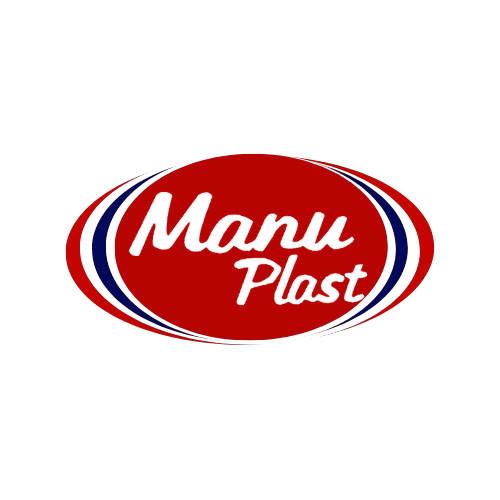

Modernizing Industrial Manufacturing.
A comprehensive digital transformation and rebranding initiative for a legacy manufacturing powerhouse.
The Challenge
Legacy Operations
Manuplast possessed decades of industrial manufacturing expertise, but their digital footprint and internal workflows were stuck in the past. To compete globally and attract top-tier enterprise contracts, they needed a top-to-bottom digital and brand overhaul.
Operational Digitization
Replacing paper-based trails and legacy on-premise software with cohesive, cloud-based digital workflows.
Digital Rebranding
Elevating their visual identity to communicate precision, reliability, and modern technological integration to global partners.
A Complete Ecosystem Overhaul
We executed a synchronized transformation of both their operational backend and their public-facing brand.
Complete Digital Transformation
We mapped out their entire manufacturing supply chain and implemented a modern, digital-first infrastructure. This eliminated operational bottlenecks, provided real-time analytics to the factory floor, and allowed management to monitor KPIs from anywhere in the world.
Comprehensive Branding
To match their newly modernized operations, we redesigned their logo, typography, color palettes, and entirely rebuilt their corporate web presence. The new brand communicates authority, cutting-edge technology, and enterprise-grade reliability.